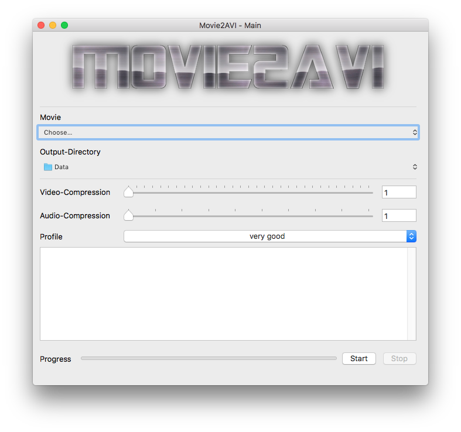
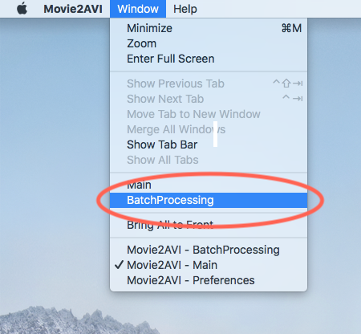
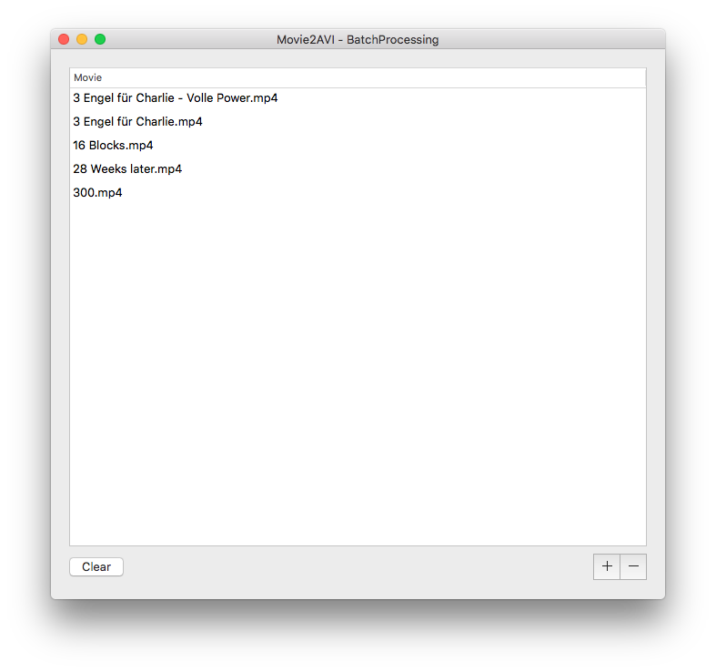
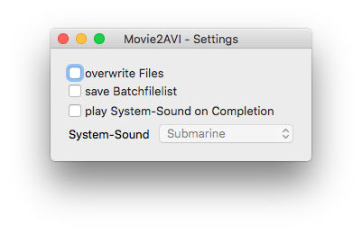

Welcome to Movie2AVI!
Movie2AVI is an App for converting Videos in various Formats into the AVI-Format.
How do I use it? |
|
|  |
Select the Input-Movie. Select the Output-Directory. Press the Start-Button. |
Batch Processing |
|
|   |
In the Screenbar-Menu select Window - BatchProcessing. In the Batch-Processing-Window select the + Button to add Input-Movie-Files. In the Main-Window press the Start-Button to start the Movie-Conversion-Process. When the Batch-Processing-Window is opened that Movies will be processed. When it is closed the Movie from the Main-Window will be processed |
Preferences |
|
|  |
In the Preferences-Window you can set Overwrite-Mode, save Batchfiles, play System-Sound and the System-Sound. |